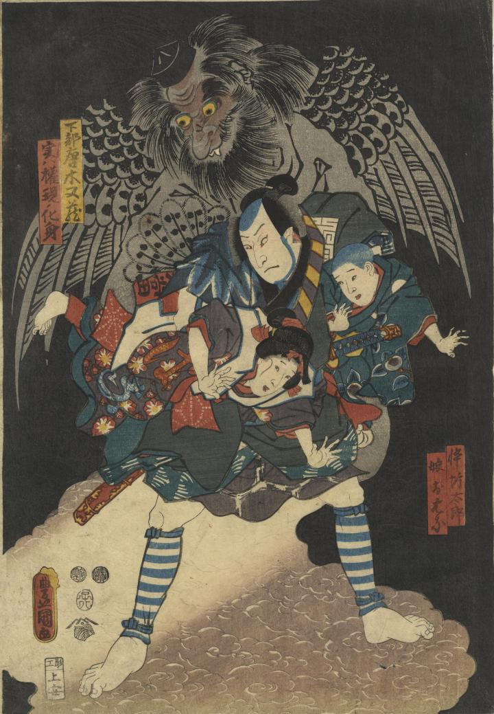

坊太郎を助ける天狗。天狗の目は丸く、口からは牙がみえ、大きな羽が背中についている。
著作者：豊國／出典：親書誌：U426_nichibunken_0369：金毘羅利生稚讎；コンピラ リショウ オサナ カタキウチ／日付：2014／資源識別子：U426_nichibunken_0369_0001_0000
Copyright (c)2010- International Research Center for Japanese Studies, Kyoto, Japan. All rights reserved.